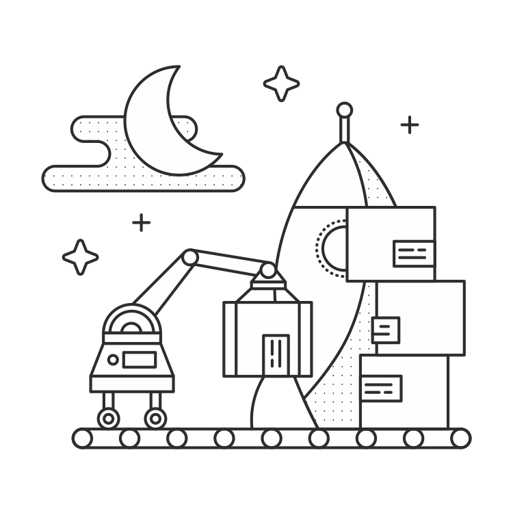

组织你的项目

Flask将你的应用的组织工作有你来决定。这也是我像初学者一样喜欢Flask的原因之一，但是这确实意味着你必须对如何构建你的代码做一番思考。你可以把你整个应用放在一个文件中，或者把它分散在多个包中。这里有一些你可以遵循的组织模式，可以更轻松的开发和部署。
定义
让我们来定义一些在本章中会遇到的术语
版本库 - 这是放置你的项目的基础文件夹。这个术语传统上指的是版本控制系统，你应该使用版本控制系统。当我在本章中提到你的存放库，我将说的是你的项目的跟目录。当在你的应用中工作时，你可能将不会离开这个目录。
包 - 这个指的是一个包含你的应用代码的Python包。我将会在本章谈论更多的关于设置你的作为一个包，但是现在只需要知道包是版本库的一个子目录。
模块 - 一个模块是一个单独的Python文件可以被其他Python文件所导入。一个包本质上是多个模块被包裹在一起。
注意
组织模式
单模块
你会遇到很多Flask示例将所有的代码放在一个文件中，常常是app.py。这对于快速项目是很好的（比如一个用来教学的项目），你只需要在这个文件里提供一些路由并且你已经获得少于几百行的应用代码了。
1 | app.py |
应用逻辑将放在清单的app.py中。
包
当你工作的项目稍微有些复杂时，一个单独的模块会导致混乱。你将需要为模型和表单定义类，并且他们将与你的路由和配置代码混合起来。所有的这些会阻碍开发。为了解决这个问题，我们能够把我们应用的不同的组件分解出来进行分组形成相互连接的模块 – 一个包。
1 | config.py |
在这个列表中展示的这种结构允许你将应用中不同的组件按照符合逻辑的方式进行分组。定义模型的类一起放在models.py中，路由定义放在views.py中，表单定义放在forms.py中（我们稍后有整章来介绍表单）。
下边的表提供一个基本的组件概述，你会在大多数的Flask应用中见到。你可能最终在你的版本库中有很多其它文件，但是这些是大多数Flask应用中最普遍的。
| 文件 | 描述 |
|---|---|
run.py |
这个文件被调用启动开发服务器。它从你的包中获得应用的副本并且运行它。这个不能用在生产中，但是它将在开发中有很多的用途。 |
requirements.txt |
这个文件列出所有你的应用所依赖的Python包。你可能为生产和开发依赖准备了各自的文件。 |
config.py |
这个文件包含了大多数你的应用所需要的配置变量。 |
/instance/config.py |
这个文件包含不应该在版本控制中的配置变量。这里包括的东西比如API密钥和数据库RUIs包含的密码。这个也包含你的应用特定情况下的特殊的变量。比如你可能在config.py中有DEBUG = False，但是设置DEBUG = True在 instance/config.py在你作为开发的本地设备中。因为这个文件会在config.py后读取，这将会覆盖它并且设置DEBUG = True。 |
/yourapp/ |
这是一个包含你应用程序的包。 |
/yourapp/__init__.py |
这个文件初始化你的应用并且汇集把所有不同的组件汇集在一起。 |
/yourapp/views.py |
这是路由被定义的地方。它可能切分为它自己的包（yourapp/views）与有联系的视图组合在一起成为一个模块。 |
/yourapp/models.py |
这是定义你的应用模型的地方。这个可能以views.py相同的方式分成多个模块。 |
/yourapp/static/ |
这个文件包含公开的CSS，JavaScript，图片和其他你想通过应用程序公开的文件。这些默认是可以通过 yourapp.com/static/ 来访问的。 |
/yourapp/templates/ |
这是将要放置你的应用Jinja2模板的地方。 |
蓝图
有时你可能会发现你有很多相关的路由。如果你像我一样，你的第一个想法是将views.py切分成一个包并且将这些视图分组到一个模块中。这种情况下，可能是时候考虑将你的应用放在蓝图中了。
蓝图本质上是有点自包含方式定义你的应用的组件。他们作为你应用程序中的应用。你可能为管理员控制台、前后端和用户仪表盘有不同的蓝图。这让你通过组件来分组视图、静态文件和模板，同时来人让你分享模型、表单和其他你的应用程序在这些组件之间的部分。我们马上将会谈论使用蓝图组织你的应用。
总结
- 为你的应用使用单一的模块，对于快速项目来说是很好的。
- 为你的项目使用包，对于项目中的视图、模型、表单和其他组件来说是很好的。
- 蓝图是用几个不同的组件来组织项目很好的方式。